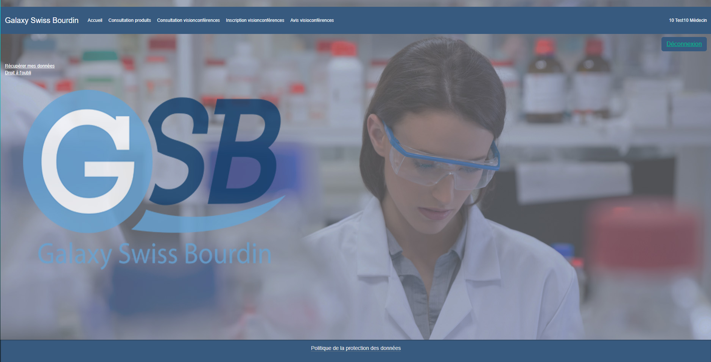
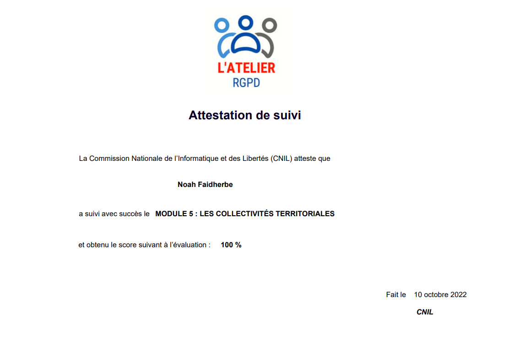

J'ai commencé avec un Bac STMG au lycée Lavoisier puis j'ai continué avec un BTS SIO(Services informatiques au organisations) au lycée André Malraux où j'ai pris la spécialité SLAM (Developpeur)
Compétences
Les compétences que j'ai pu developper pendant ma carriere
Au cours de mon stage j'ai utilisé l'application Strapi qui est capable de gérer des données et sert aussi d'API pour les applications et sites web
Répondre aux incidents et aux demandes d’assistance et d’évolution:
Sur GLPI lors d'un projet de groupe j'ai dû gerer les tickets
Développer la présence en ligne de l’organisation:
Lors de ma 2eme année de BTS SIO. En groupe on a travaillé sur un projet dont le but etais d'améliorer un site d'une organisation nommée GSB dans le but quel puisse stocker des données (login, medicaments, etc...)

Travailler en mode projet:
Dans le projet GSB mentioné plus tôt, j'ai travailler avec un groupe donc on a travaillé en mode projet à l'aide d'un tableau qui donnait les tâches de chacun
Mettre à disposition des utilisateurs un service informatique:
Durant mon stage de 2de année, j'ai participé au développement d'une application mobile
Certifications
Les différentes ceritifications que j'ai effectué

Veille Technologique
Articles synthétisé:
Google règle un litige en supprimant "des milliards de données" collectées lorsque les utilisateurs naviguaient en mode Incognito. Cet accord exige de Google qu'il supprime ou anonymise les données de navigation privée datant de décembre 2023 et antérieurement. De plus, les utilisateurs du mode Incognito pourront bloquer les cookies tiers pendant cinq ans.
Bien que les plaignants aient réclamé 5 milliards de dollars de dommages et intérêts, Google ne paiera rien dans le cadre de cet accord. Les utilisateurs peuvent poursuivre des actions en justice individuelles dans les tribunaux d'État. Google a mis à jour ses accords utilisateur pour clarifier les pratiques de collecte de données dans le mode Incognito.
Source:
Plusieurs vulnérabilités ont été découvertes dans Google Chrome, pouvant permettre l'exécution arbitraire de code. L'exploitation réussie de ces vulnérabilités pourrait autoriser l'exécution de code arbitraire dans le contexte de l'utilisateur connecté. Selon les privilèges associés à l'utilisateur, un attaquant pourrait alors installer des programmes ; visualiser, modifier ou supprimer des données ; ou créer de nouveaux comptes avec des droits utilisateur complets. Les utilisateurs dont les comptes sont configurés avec moins de droits utilisateur sur le système pourraient être moins touchés que ceux qui opèrent avec des droits d'administrateur.
Source:
Plusieurs vulnérabilités ont été découvertes dans les produits Microsoft, dont la plus grave pourrait permettre l'exécution de code à distance dans le contexte de l'utilisateur connecté. Selon les privilèges associés à l'utilisateur, un attaquant pourrait alors installer des programmes ; visualiser, modifier ou supprimer des données ; ou créer de nouveaux comptes avec des droits utilisateur complets. Les utilisateurs dont les comptes sont configurés avec moins de droits utilisateur sur le système pourraient être moins touchés que ceux qui opèrent avec des droits d'administrateur.
Source:
Le MOOC de l'ANSSI a été lancé en mai 2017 dans un objectif de sensibiliser le plus grand nombre d'individus aux enjeux de la cybersécurité. Il compte aujourd'hui plus de 200 000 apprenants et apprenantes et 35 000 attestations de réussite ont été délivrées. Sa plateforme va évoluer le 1er juillet 2021.
Atelier RGPD de la CNIL - Module 1
L’atelier RGPD est une formation en ligne gratuite, illimitée et ouverte à tous (Mooc). Elle permet de sensibiliser les professionnels à la protection des données et d’accompagner leur mise en conformité. Dans cette nouvelle version, la CNIL propose un nouveau module dédié aux collectivités territoriales.
Atelier RGPD de la CNIL - Module 2
L’atelier RGPD est une formation en ligne gratuite, illimitée et ouverte à tous (Mooc). Elle permet de sensibiliser les professionnels à la protection des données et d’accompagner leur mise en conformité. Dans cette nouvelle version, la CNIL propose un nouveau module dédié aux collectivités territoriales.
Atelier RGPD de la CNIL - Module 3
L’atelier RGPD est une formation en ligne gratuite, illimitée et ouverte à tous (Mooc). Elle permet de sensibiliser les professionnels à la protection des données et d’accompagner leur mise en conformité. Dans cette nouvelle version, la CNIL propose un nouveau module dédié aux collectivités territoriales.
Atelier RGPD de la CNIL - Module 4
L’atelier RGPD est une formation en ligne gratuite, illimitée et ouverte à tous (Mooc). Elle permet de sensibiliser les professionnels à la protection des données et d’accompagner leur mise en conformité. Dans cette nouvelle version, la CNIL propose un nouveau module dédié aux collectivités territoriales.
Atelier RGPD de la CNIL - Module 5
L’atelier RGPD est une formation en ligne gratuite, illimitée et ouverte à tous (Mooc). Elle permet de sensibiliser les professionnels à la protection des données et d’accompagner leur mise en conformité. Dans cette nouvelle version, la CNIL propose un nouveau module dédié aux collectivités territoriales.
Cisco - Introduction à la cybersécurité
Ce cours d'introduction vous emmène dans le monde de la cybersécurité. Vous apprendrez les bases de la cybersécurité pour protéger votre vie numérique personnelle et obtenir des informations sur les plus grands défis auxquels les entreprises, les gouvernements et les établissements d'enseignement sont confrontés aujourd'hui. Les professionnels de la cybersécurité qui peuvent protéger et défendre le réseau d'une organisation sont très demandés.